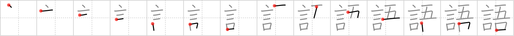

語
← →
word

Reading:
On-Yomi: ゴ — Kun-Yomi: かた.る、かた.らう
Heisig story:
Whereas the character for say focused on the actual talking, that for words stresses the fact that although it is I who say them, the words of a language are not my own. You can see the clear distinction between I and words just by looking at the kanji.
Koohii stories:
1) [rosie] 28-7-2008(226): The simplest word to say is I.
2) [uchifly] 15-12-2009(43): Jesus said, "I am the WORD.".
3) [johanvg] 8-8-2006(28): May I say a word about that?
4) [taijuando] 15-2-2006(21): The rap group, the Five Mouths, always go around saying "word".
5) [Danieru] 9-12-2007(20): I, the perceiving subject, need all five senses to learn the WORDS and language of Japanese…. holistic learning, not just rote memory work!